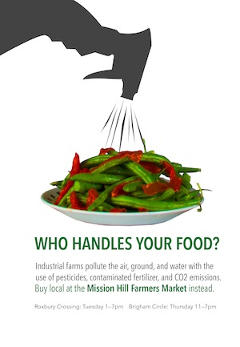
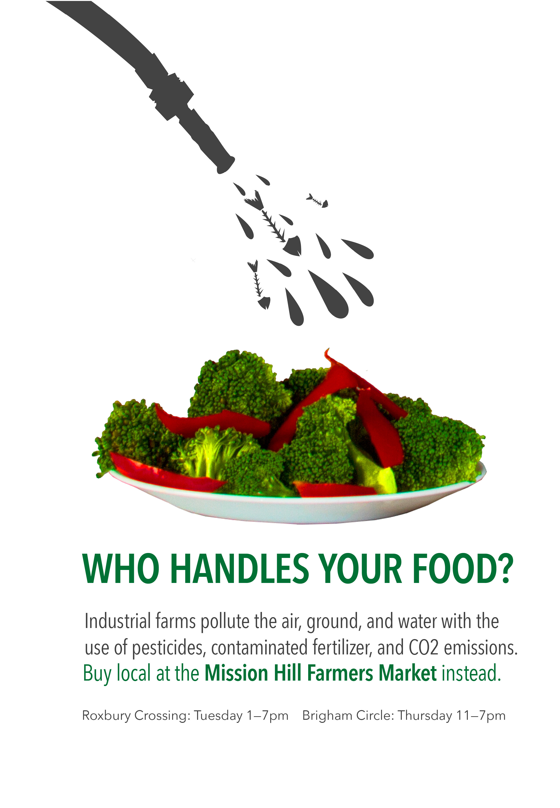

For this assignment I did research and had to make a poster series to persuade customers to shop at the Mission Hill Farmers Market. for the series I took photos of the food myself after visiting the market and I combined it with vector illustrations.